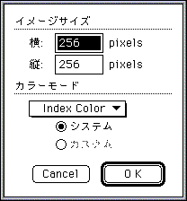
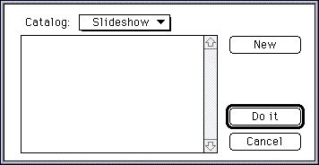
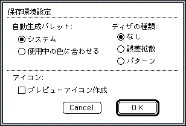
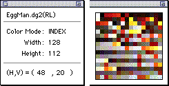
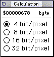
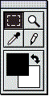
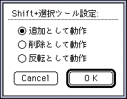
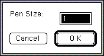
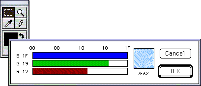

★Graphic Tools Guide
★セガコンバータユーザーズマニュアル
★Graphic Tools Guide
★セガコンバータユーザーズマニュアル
セガコンバータユーザーズマニュアル
■リリースノート
- ● 4.79J → 4.83Jバージョンアップ情報
- ●いくつかの障害を解消しています。
- ●Power PC対応
- 「Sega Converter」は、Power Macintoshで起動した場合、ネイティブモードで動作します。
■はじめに
- 『SEGA Converter』は、PICT・DGT・RGB・BOB等のフォーマットで保存されている画像データを表示したり、これらのファイルを相互に変換するアプリケーションです。
また、簡単なレタッチやコピー＆ペースト等の編集も可能です。
■注意
- 他のアプリケーションとのコピー＆ペーストを行うときのクリップボードに保存されている画像データが大き過ぎる場合、アプリケーションが起動できない場合があります。この場合にはFinder上で『SEGA Converter』を選択後、ファイルメニューの『情報を見る』でアプリケーションの使用サイズを大きくしてください。
■ファイルメニュー
- ●新規...
- ダイアログを表示し、指定イメージのウインドウを新規作成します。

◆イメージサイズ
新規作成するウインドウのサイズを指定します。
Width ：横サイズを入力します。
Height：縦サイズを入力します。
◆カラーモード
新規作成するウインドウのカラーモード(BitDepth)を指定します。
RGB Color ：32bit(RGBモード)で作成します。
Index Color：8bit(パレットモード)で作成します。
◇ システム：Macintoshシステムパレットを使用します。
◇ カスタム：クリップボードに保存されたパレットを使用します。
- ●開く...
- オープンダイアログを表示し、指定フォーマットのファイルを読み込み、ウインドウに表示します。
- ●閉じる
- 開いているウインドウを閉じます。ファイルに変更があった場合、保存するか、そのまま捨てるか聞いてきますので、保存する場合は、『Save』ボタンをクリックしてください。『Save as..』と同じ動作を行います。
- ●保存
- ウインドウ内容を同名で上書き保存します。
- ●別名で保存...
- 保存ダイアログを表示し、指定フォーマットでファイルを変換保存します。
Save Selection を指定すると、選択範囲内のみ保存します。
- ●カタログ
- カタログダイアログを表示し、指定フォルダ内の指定フォーマットの全てのファイルに対し表示・保存等を行います。『Do it』ボタンでカタログ実行、『Cancel』ボタンでダイアログを閉じます。

◆New
オープンダイアログを表示し、指定フォルダ内の指定フォーマットのファイルをカタログ登録します。
◆連続表示
カタログ登録されたファイルを連続表示します。
◆保存
カタログ登録されたファイルを指定フォーマットで連続保存します。
- ●環境設定...
- ダイアログを表示し、保存環境を設定します。

◆自動生成パレット
パレット情報のないフォーマット(PICT・RGB等)からパレット情報のあるフォーマット(DGT・BOB等)に変換する時、自動的にパレットを生成します。その方法を指定します。
◇システム Macintoshのシステムパレットを使用します。
◇使用中の色に合わせる イメージに合わせて最適化されたパレットを生成します。
◆ディザの種類
上記処理が行われる場合の、ディザ処理の種類を指定します。
◇なし ディザ処理を行いません。
◇誤差拡散 誤差拡散法によるディザ処理を行います。
◇パターン パターンディザ処理を行います。
◆アイコン
◇プレビューアイコン作成 保存されたファイルのアイコンに、画像イメージを張り付けます。
- ●Quit
- アプリケーションを終了します。
■編集メニュー
- ●取り消し
- ●カット
- ●コピー
- ●ペースト
- ●消去
- ●全てを選択
- 各コマンドは、一般的なペイント系のアプリケーションに準じています。他のアプリケーションとの間で、コピー＆ペースト可能です。
■オプションメニュー
- 一番表に出ているファイル(カレントファイル)の表示に関する操作を行います。
- ●情報を見る
- カレントファイルに関する情報を表示します。
ズームボックスをクリックすると、ウインドウが拡張され、カレントファイルがパレットを使用していた場合、その内容を表示します。

- ●倍率
- カレントファイルの表示倍率を指定します。
- ●グリッド
- カレントファイルに格子を表示します。
- ●横選択単位
- ●縦選択単位
- それぞれ、水平・垂直方向の選択ツールの選択(移動)単位を設定します。
- ●データ計算
- 選択範囲のデータ容量を計算します。

■ウィンドウメニュー
- カレントファイルを選択します。
■ツールパレット
- 各ツールは一般的なペイント系のアプリケーションに準じています。

- ●選択ツール
- 『ドラッグ』で長方形範囲を指定します。選択後は一般的なフローティング操作に移行します。
『Shift+ドラッグ』で選択範囲を拡張することができます。
『ダブルクリック』で拡張の方式を指定します。

◆追加として動作 指定範囲が現在の選択範囲に追加されます。
◆削除として動作 指定範囲が現在の選択範囲から削除されます。
◆反転として動作 指定範囲によって現在の選択範囲が反転(XOR)されます。
- ●虫眼鏡ツール
- クリックされたポイントを中心に2倍拡大表示していきます。
『Option+クリック』で1/2縮小表示していきます。
『ダブルクリック』で等倍表示します。
- ●スポイトツール
- クリックされたポイントのカラーが前景色(描画色)になります。
『Option+クリック』で背景色が指定されます。
- ●鉛筆ツール
- 前景色で描画します。
『Option+クリック』でスポイトツールと同様の動作をします。
『ダブルクリック』でペンのサイズを変更します。

- ●前景色・背景色ボックス
- 現在の前景色・背景色を表示します。
矢印をクリックすると、前景色と背景色が入れ替わります。
『ダブルクリック』でカラーピッカを表示し、カラーを変更します。
カレントファイルがパレットを使用している場合、『クリック＆ドラッグ』で、パレットを選択します。

★Graphic Tools Guide
★セガコンバータユーザーズマニュアル
Copyright SEGA ENTERPRISES, LTD., 1997